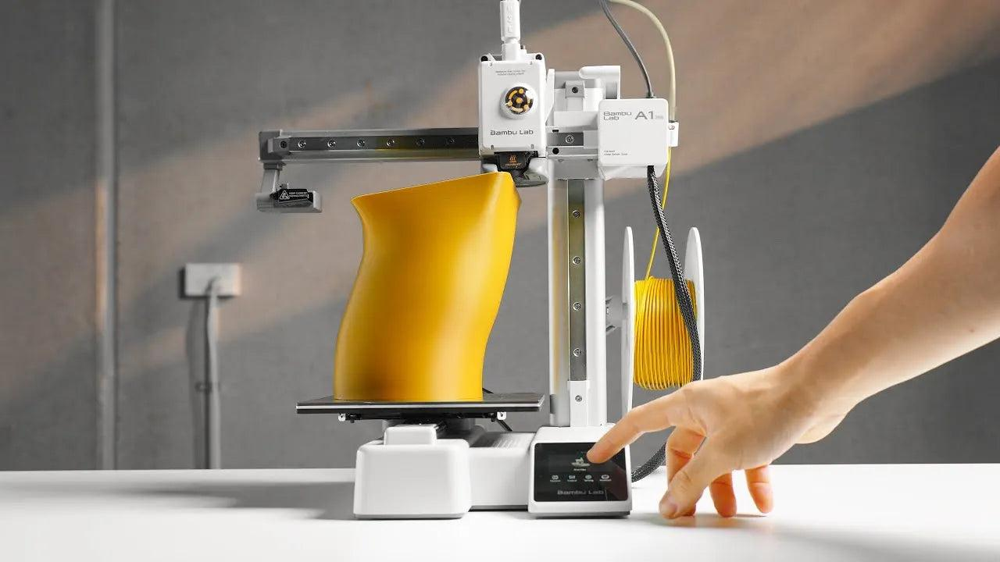

Consolas
Mantenimiento y reparación para que tu consola rinda bien y dure más, sin ruidos ni sobrecalentamiento.
Qué incluye
- Limpieza profunda y cambio de pasta térmica
- Reparación de puertos HDMI y de carga
- Revisión de joysticks y lectores de disco
- Diagnóstico de fallas de encendido o imagen

Trabajos realizados
Consolas que ya pasaron por el taller.

Contá qué se hizo en este trabajo.

Contá qué se hizo en este trabajo.

Contá qué se hizo en este trabajo.